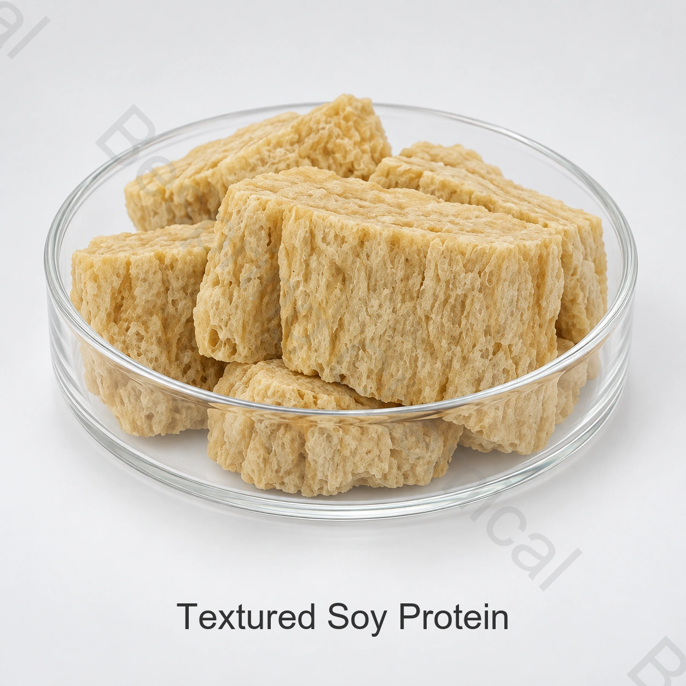

ผู้ผลิตโปรตีนถั่วเหลืองระดับอาหาร
รายงานเกรดหรือประเภทที่แน่นอน การนําไปใช้ ปริมาณ, แพ็คแพ็ค, จุดหมายปลายทาง และเอกสารที่จําเป็น
ส่วนประกอบระดับอาหาร "อาหาร" ส่วนประกอบ ATS
โปรตีน ที่ เป็น ลิ่ม เป็น ส่วน ประกอบ ของ ถั่ว เหลือง ที่ มี โครง สร้าง เป็น สาร ประกอบ สําหรับ การ หมัก และ เนื้อ เยื่อ ใน อาหาร ที่ ปรุง แล้ว; โปรตีน พื้น ฐาน, ขนาด, สี, และ น้ํา ที่ รับ ประทาน ได้ ไม่ ต่าง กัน ไป.

Product image esche และ Package เมื่อมีการเรียงลําดับ
แชร์เกรด, ใบสมัคร, ปริมาณ, แพ็ค, จุดหมายปลายทาง และเอกสารที่จําเป็น
ระดับเกรดอาหาร, การกําหนดแหล่ง
การกําหนดเอกสารปัจจุบันใช้ได้จากการขาย
แพ็คเกจยืนยันในข้อเสนอที่ระบุแหล่ง
หลักฐานตรงกันOCA ปัจจุบันสามารถใช้สําหรับพื้นที่ดิสก์ได้
คําตอบผลิตภัณฑ์โดยตรง
โปรตีน ที่ เป็น ลิ่ม เป็น ส่วน ประกอบ ของ ถั่ว เหลือง ที่ มี โครง สร้าง เป็น สาร ประกอบ สําหรับ การ หมัก และ เนื้อ เยื่อ ใน อาหาร ที่ ปรุง แล้ว; โปรตีน พื้น ฐาน, ขนาด, สี, และ น้ํา ที่ รับ ประทาน ได้ ไม่ ต่าง กัน ไป.
ความเหมาะสมทางการค้าขึ้นอยู่กับแหล่งกําเนิดที่แน่นอน, วัตถุประสงค์, กระบวนการอาหารที่สมบูรณ์ และกฎตลาดปลายทาง. หน้านี้สนับสนุนการรับรองเบื้องต้น; ข้อกําหนดปัจจุบันที่มีลายเซ็นและชุดของ COA ที่จัดจําหน่ายโดยควบคุมการสั่งซื้อ
รายการการเกิดขึ้นอีก
เมื่อ เทียบ กับ ระดับ ที่ เสนอ ให้ แล้ว ข้อ เรียก ร้อง ใน การ สมัคร และ ข้อ เรียก ร้อง ทาง การ ค้า ก่อน ที่ จะ ขอ ตัว อย่าง หรือ สั่ง.
รายงานเกรดหรือประเภทที่แน่นอน การนําไปใช้ ปริมาณ, แพ็คแพ็ค, จุดหมายปลายทาง และเอกสารที่จําเป็น
ร้องขอข้อเสนอที่ระบุแหล่งด้วยข้อกําหนดปัจจุบัน, Incotery, ปลายทางและหน้าต่างส่ง
แบ่งปันสูตรทั้งหมด สภาวะกระบวนการ การทํางานเป้าหมาย และการทดสอบผลสําเร็จ
อัตลักษณ์ที่สมบรูณ์ วิธี COA SDS ใบรับรอง แกะรอยได้ และควบคุมความคาดหวังได้
การตรวจสอบโปรแกรม
เพื่อ ยืน ยัน การ ใช้ ประโยชน์ ทาง กฎหมาย และ การ ใช้ เทคนิค ใน อาหาร สําเร็จ รูป.
กําหนดเป้าหมายโปรตีนที่เสร็จแล้ว และวิเคราะห์พื้นฐาน เรียงลําดับของรสชาติ, พื้นผิวและความเข้ากันได้ ก่อนที่จะแก้ไขการเปลี่ยนแปลงสูตร
ลอง ทํา การ ผสม, ความ ต้องการ น้ํา และ เนื้อ เยื่อ โดย ผ่าน กระบวนการ อบ ขนมปัง หรือ การ พ่น.
การแยกสารสนเทศ การแพร่กระจาย ตะกอนและความร้อน รวมไปถึงสภาวะของสารสนเทศ
กำหนดสมรรถนะเจล ความแน่นเมื่อกัด หรือการจับน้ำที่ต้องการ เปรียบเทียบโปรตีนที่เลือกในสูตรและลำดับกระบวนการทั้งหมด
การเลือกเชิงเทคนิค
ระบุแหล่งพืชหรือนมและว่าเป็นแป้ง คอนเซนเทรต ไอโซเลต หรือวัสดุเนื้อสัมผัส ยืนยันสูตรผสมหรือสารปรับมาตรฐาน
เฉพาะ เปอร์เซ็นต์ ของ โปรตีน เท่า นั้น ที่ ไม่ ก่อ ให้ เกิด ความ สามารถ ใน การ ย่อย อาหาร, การ ฟอก, หรือ การ ทํา ให้ เกิด อาการ บวม.
ใช้ ตัว อย่าง อ้างอิง ที่ ได้ รับ การ ยอม รับ และ ใช้ เป้า หมาย ที่ เหมาะ สม ใน การ วิเคราะห์.
ต้องการข้อมูลแหล่งกําเนิดในปัจจุบัน โครงสร้างชีวภาพ และแหล่งกําเนิด ตรวจสอบสิทธิ์ในการผลิตสินค้าและการผลิต
เอกสารส่วนตัวทางเทคนิค
บีสปริงเคมี ไม่ได้รับการเผยแพร่ข้อกําหนดผลิตภัณฑ์สําหรับส่วนประกอบนี้ทางออนไลน์ ติดต่อการขายสําหรับข้อกําหนดที่ระบุแหล่งในปัจจุบัน หรือ TDS และยืนยันการแก้ไข, วิธี และเกณฑ์ที่ตรงกับความต้องการการซื้อของคุณ
ต้องการกําหนดลายเซ็นในปัจจุบัน หรือ TDS, SDS, วิธีวิเคราะห์, ตัวแทน COA และชุด COA
การตรวจสอบใช้ความปลอดภัยด้านอาหาร, จุดกําเนิด, อัลเลอร์เจน, คอสเชอร์, ฮาลาล และเว็บไซต์สําหรับเกรดและแหล่งที่มาที่แน่นอน
ทบทวน ดู มาตรฐาน โปรตีน และ แนว แนะ ของ โค เดก ซ์แล้วใช้กฎตลาดปลายทางในปัจจุบัน กับอาหารที่เสร็จแน่นอน
โน้ตคอมไพล์: การแสดงตัวหรือมาตรฐานระหว่างประเทศไม่อนุมัติทุกโปรแกรม ได้รับการยืนยันประเภทอาหาร, ใช้ระดับ, ระบุชื่อ และความต้องการอื่น ๆ ในแต่ละตลาดปลายทาง
การจัดเก็บและการจัดการ
คําถามของผู้ซื้อ
ส่วน ผสม ที่ เป็น สาร ประกอบ ของ ถั่ว เหลือง ซึ่ง มี ส่วน ผสม ที่ เป็น โครง สร้าง ของ สาร ประกอบ สําหรับ การ ย่อย อาหาร ที่ ปรุง แล้ว; โปรตีน พื้น ฐาน, ขนาด, สี, และ ระดับ น้ํา จะ รับ ได้ ไม่ มาก นัก.
ผลิตภัณฑ์ โปรตีน ที่ ได้ รับ การ ปรับ ปรุง แล้ว; โค เดก ซ์ โซ ไซ ออ รี คอล; เกรน คูล หรือ เนื้อ เยื่อ อื่น ๆ — ยืน ยัน.
Bespring elections ไม่ได้ลงเผยแพร่ข้อกําหนดสําหรับผลิตภัณฑ์นี้ทางออนไลน์. ติดต่อการขายสําหรับ ข้อกําหนดที่ระบุแหล่งในปัจจุบัน หรือ TDS, วิธีการและตัวแทน COA.
ต้องการข้อกําหนดในปัจจุบัน หรือ TDS, SDS, SDS, และ COA ประกอบด้วย, รวมไปถึง การรักษาความปลอดภัยอาหารที่เกี่ยวข้อง, Allergen, จุดกําเนิด, Kosher, Halal และเว็บไซต์ สําหรับแหล่งกําเนิดที่แน่นอน
จัดหาเกรดหรือประเภทที่แน่นอน โปรแกรม ความต้องการการแสดงที่สําคัญ ปริมาณ แพ็คแพ็คสินค้า ตลาดปลายทาง ต้องการใบรับรอง อินโคเอเชีย และวันส่งมอบสินค้า
เนื้อหาอัปเดต 2026-09-13.
การทําตัวเปรี้ยวที่เกี่ยวข้อง
เรียกดูแฟ้มผลงานเต็มรูปแบบและเครื่องทําผลิตภัณฑ์เทคโนโลยีที่มีอยู่
หารือเกี่ยวกับข้อกําหนดส่วนตัว เอกสาร ตัวอย่าง และความต้องการทางการค้า
การทบทวนการกระตุ้นและการส่งออก เพื่อจัดหาส่วนประกอบระหว่างประเทศ
การจัดหาที่อิงข้อกำหนด
แบ่งปันเกรดหรือประเภทที่ถูกต้อง, โปรแกรม, การใช้งานที่สําคัญ, ปริมาณ, แพ็ค, ปลายทาง และเอกสารสําหรับข้อเสนอที่เกี่ยวข้อง
บอกเราถึงตลาดเกรดและปลายทางของคุณ เราจะได้ยืนยันได้ว่าเอกสารไหน ที่สั่งได้
การอ้างอิงภายนอกไม่ใช่ใบรับรองชุดหรือค่าผลิตภัณฑ์ของเบสปริง